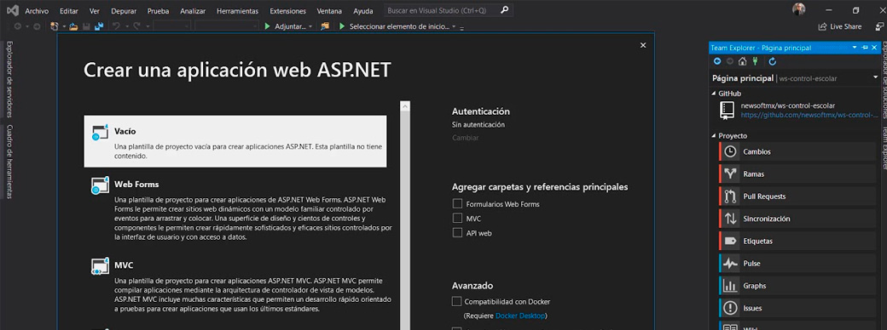
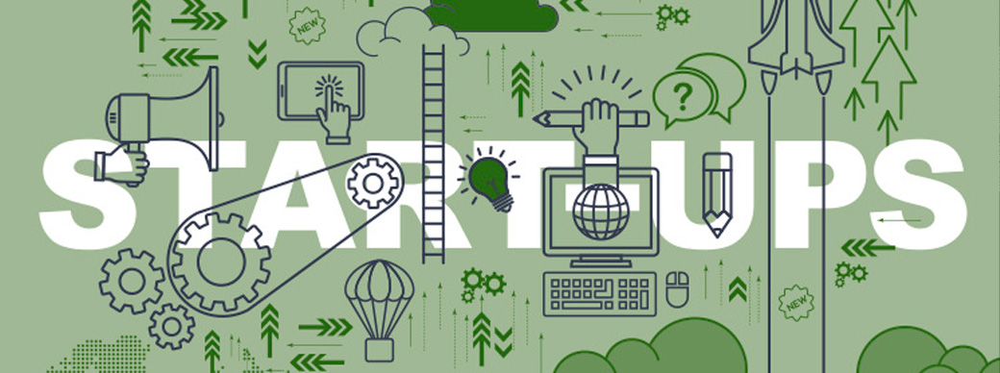
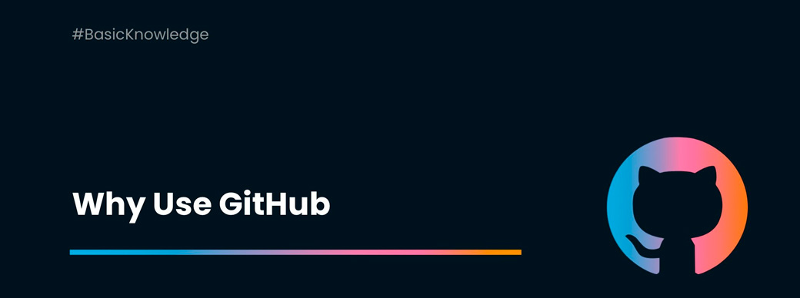

Promedio 1
Semana 1: Evaluación de conocimientos previos, Análisis de proyectos innovadores: exploración detallada de proyectos como el regador automático, el alimentador automático y el Robot bartender. Discusión sobre las tecnologías y conceptos involucrados en estos proyectos. Definición de un proyecto innovador y videos inspiradores sobre cómo concebir y desarrollar proyectos innovadores. Introducción a diferentes tipos de proyectos y sus aplicaciones en el mundo real.
Semana 2: Creación de la bitácora: discusión sobre cómo llevar un registro detallado de los resultados preliminares de un proyecto de investigación y su importancia para el éxito del proyecto. Exploración de ejemplos de bitácoras, como Polar Step (una bitácora para viajeros) y la bitácora de la caja negra del avión, resaltando su utilidad en situaciones diversas. Detalles planeados para tu página web: "Quién soy", "Bitácora", "Proyecto grupal" y "Contacto". Inmersión en Visual Studio Code, explorando su interfaz, herramientas y ejemplos de páginas web desarrolladas en la plataforma. Desglose de la estructura de los documentos HTML, incluyendo elementos como DOCTYPE HTML, HTML, HEAD, y vínculos web. Guía paso a paso sobre la construcción de atributos en HTML. Experiencia de instalación y creación de tu primera página web en Visual Studio Code. Práctica de comandos y tipos de escritura en HTML.
Semana 3: Continuación del desarrollo de una página web desde cero, destacando los desafíos y logros del proceso. Organización de archivos en carpetas para mantener un proyecto web ordenado y eficiente. Práctica en la inserción de imágenes y multimedia en la página web, con consejos sobre optimización de imágenes. Creación de secciones específicas en la página web para albergar información sobre la Bitácora, el Proyecto final, la Presentación y la información de Contacto. Introducción a la creación de una barra de navegación con código HTML y su importancia para la experiencia del usuario. Enfoque en la usabilidad y accesibilidad web, discutiendo buenas prácticas en el diseño de sitios web. Reflexión sobre las lecciones aprendidas hasta ahora y los desafíos superados.
Semana 4: Exploración de plantillas para páginas web en html5up.com y cómo adaptarlas para cumplir con las necesidades específicas del proyecto grupal. Ampliación de la edición de plantillas y creación de subpáginas en el sitio web. Presentación de cuestionarios realizados en grupos y análisis de los resultados para obtener ideas e inspiración. Actualización sobre el progreso de las páginas web personales de cada miembro del grupo. Preparación de una presentación completa del proyecto, incluyendo una revisión detallada de la bitácora y la entrega de los entregables planificados para la siguiente semana. Examinar videos relacionados con la creación de startups y los pasos iniciales en el desarrollo de proyectos. Exploración más profunda de la problemática seleccionada, utilizando un cuadro de ideas (moodboard) para evaluar la viabilidad y creatividad de las soluciones propuestas.
